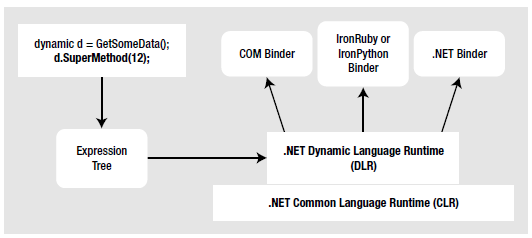

Now that you better understand what “dynamic data” is all about, let’s learn how it is processed. With the release of .NET 4.0, the Common Language Runtime (CLR) has a complementary runtime environment named the Dynamic Language Runtime (DLR). The concept of a ‘dynamic runtime’ is certainly not new. In fact, many programming languages such as Smalltalk, LISP, Ruby and Python have used them for years. In a nutshell, a dynamic runtime allows a dynamic language the ability to discover types completely at runtime with no compile time checks.
If you have a background in strongly typed languages (including C#, without dynamic types) the very notion of such a runtime may seem undesirable. After all, you typically want to receive compile time errors, not runtime errors, wherever possible. Nevertheless, dynamic languages/runtimes do provide some interesting features including:
An extremely flexible code base. You can refactor code without making numerous changes to data types.
A very simple way to interoperate with diverse object types built in different platforms and programming languages.
A way to add or remove members to a type, in memory, at runtime.
The role of the DLR is to enable various dynamic languages to run with the .NET runtime and give them a way to interoperate with other .NET code. Two popular dynamic languages which make use of the DLR are IronPython and IronRuby. These languages live in a dynamic universe, where type is discovered solely at runtime. And yet, these languages have access to the richness of the .NET base class libraries. Even better, their codebases can interoperate with C# (or vice versa), thanks to the inclusion of the dynamic keyword.
The DLR makes use of expression trees to capture the meaning of a dynamic call in neutral terms. For example, when the DLR encounters some C# code such as the following:
dynamic d = GetSomeData(); d.SuperMethod(12);
It will automatically build an expression tree which says in effect “Call the method named SuperMethod on object d, passing in the number 12 as an argument”. This information (formally termed the payload) is then passed to the correct runtime binder, which again could be the C# dynamic binder, the IronPython dynamic binder, or even (as explained shortly) legacy COM objects.
From here, the request is mapped into the required call structure for the target object. The nice thing about these expression trees (beyond the fact that you don’t need to manually create them) is that this allows us to write a fixed C# code statement, and not worry about what the underlying target actually is (COM object, IronPython, or IronRuby codebase, etc). Figure 18-3 illustrates the concept of expression trees from a high level.
Figure 18-3 Figure Text
With the release of .NET 4.0, Microsoft introduced the System.Dynamic namespace within the System.Core.dll assembly. Truth be told, the chances that you will need to ever directly use the types within this namespace are slim to none. However, if you were a language vendor, who wanted to enable their dynamic languages to interact with the DLR, you could make use of System.Dynamic namespace to build a custom runtime binder.
Again, you won’t need to directly dig into the types of System.Dynamic in this book, however feel free to check it out using the .NET Framework 4.0 SDK documentation if you are interested. For practical purposes, simply know that this namespace provides the necessary infrastructure to make a dynamic language “.NET aware”.
As explained, the DLR will pass the expression trees to a target object, however this dispatching will be influenced by a few factors. If the dynamic data type is pointing in memory to a COM object, the expression tree is sent to a low-level COM interface named IDispatch. As you may know, this interface was COM’s way of incorporating its own set of dynamic services. COM objects, however, can be used in a .NET application without the use of the DLR or C# dynamic keyword. Doing so however (as you will see) tends to result in much more complex C# coding.
If the dynamic data is not pointing to a COM object, the expression tree may be passed to an object implementing the IDynamicObject interface. This interface is used behind the scenes to allow a language such as IronRuby to take a DLR expression tree and map it to Ruby-specifics.
Finally, if the dynamic data is pointing to an object which is not a COM object and does not implement IDynamicObject, the object is a normal, everyday .NET object. In this case, the expression tree is dispatched to the C# runtime binder for processing. The process of mapping the expression tree to .NET specifics involves reflection services.
Once the expression tree has been processed by a given binder, the dynamic data will be resolved to the real in-memory data type, after which the correct method is called with any necessary parameters. Now, let’s see a few practical uses of the DLR, beginning with the simplification of late bound .NET calls.